INTRODUCTION TO DFT
(Design For Testability – Beginner Level)
1️⃣ Importance of Testing (WHY testing is needed?)
Why is testing mandatory in VLSI?
- As technology node reduces (7nm, 5nm, 3nm):
- Transistors become very small
- Manufacturing becomes more complex
- Even a tiny dust particle can:
- Short two wires
- Break a connection (open fault)
100% defect-free manufacturing is NOT possible
Why we test chips?
- Some defects are unavoidable
- Testing helps:
- Identify good chips
- Reject bad chips
- Faulty chips must NOT reach customers
Product Quality Depends On
Parameter | Meaning |
Test Cost | Cost spent on testing |
Test Time | Time taken to test each chip |
Test Quality | How many faults are detected |
Goal:
✔ Low cost
✔ Less time
✔ High fault detection
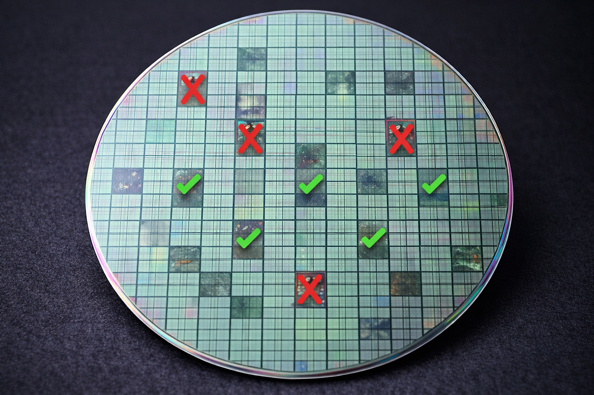
2️⃣ What is DFT (Design For Testability)?
Definition (Simple Words)
DFT is the extra logic added to a chip during the design stage to make post-manufacturing testing possible.
Key Points
- DFT is added before fabrication
- It helps test:
- Internal flip-flops
- Internal nets
- Memory elements
- Manufacturing is not error-free
- So testing after manufacturing is compulsory
Important Clarification
DFT does NOT repair the chip
DFT only detects whether chip is GOOD or BAD
DFT is:
- Detection → YES
- Localization → NO
- Repair → NO
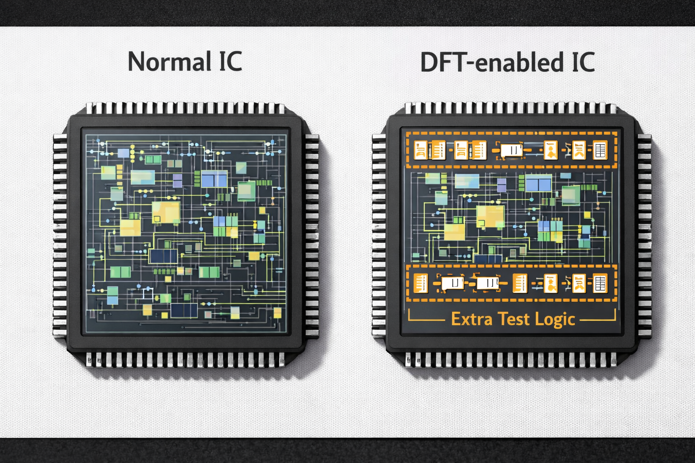
3️⃣ Difference Between Verification and Testing
Functional Verification
- Done before fabrication
- Uses testbench
- Checks design logic correctness
Testing (DFT)
- Done after fabrication
- Checks manufacturing defects
- Uses test patterns
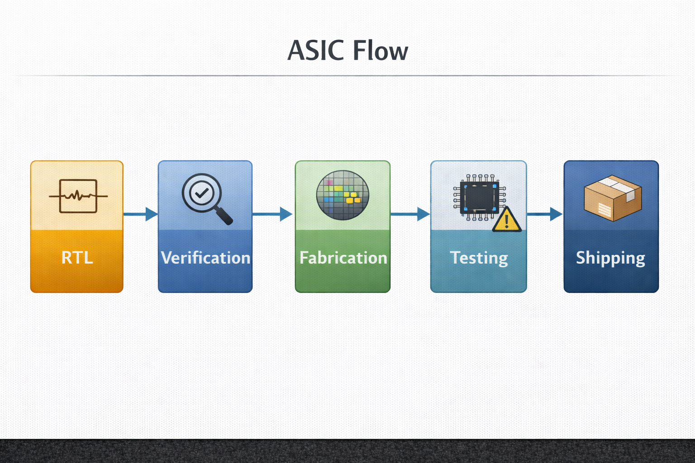
4️⃣ Faults, Defects, Errors (VERY IMPORTANT)
Defect
- Physical problem in silicon
- Example:
Fault
- Logical model of defect
- Example:
Error
- Wrong output seen at chip pin
Defect → Fault → Error
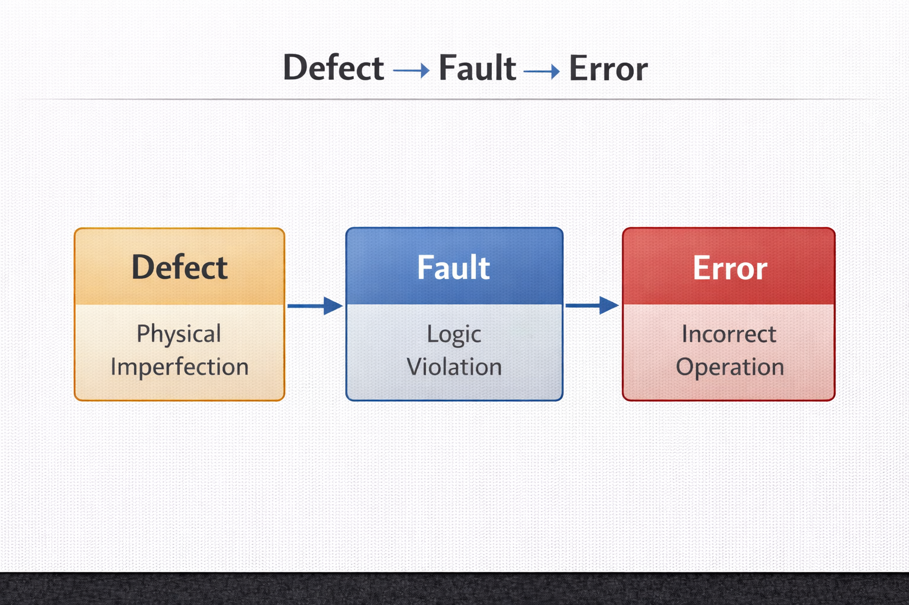
5️⃣ Fault Models (Core Concept of DFT)
Why Fault Models?
- We cannot see inside silicon
- So we model defects logically
- Most common model: Stuck-At Fault
Stuck-At-1 Fault
- Net always reads logic ‘1’
- Even if we drive ‘0’
Stuck-At-0 Fault
- Net always reads logic ‘0’
- Even if we drive ‘1’
Testing a Net N2
Test | Purpose |
Drive N2 = 0 | Check stuck-at-1 |
Drive N2 = 1 | Check stuck-at-0 |
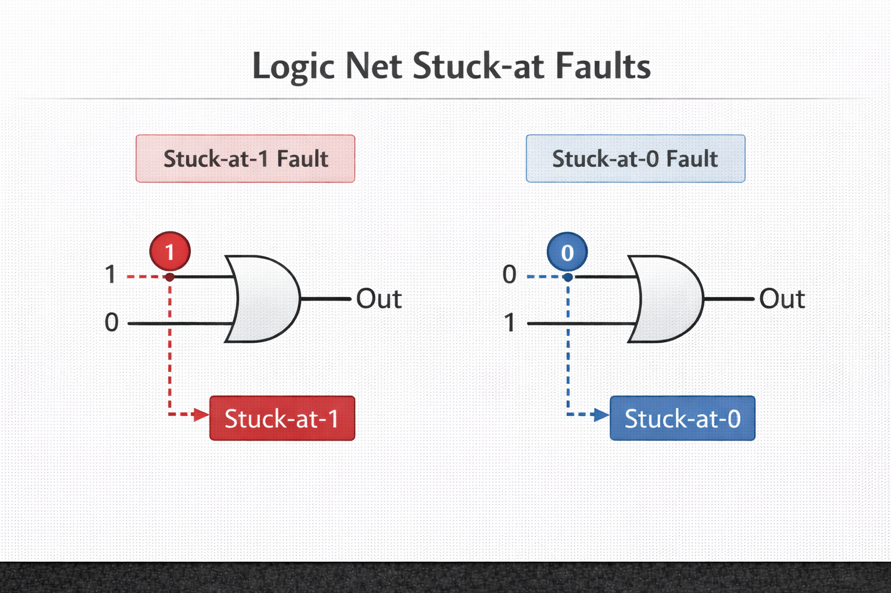
6️⃣ Controllability & Observability
Controllability
Ability to force a node to 0 or 1
Observability
Ability to see the value of a node at output
Why DFT is needed?
- Internal nodes are not directly visible
- Only chip pins are visible
- DFT provides path to control & observe
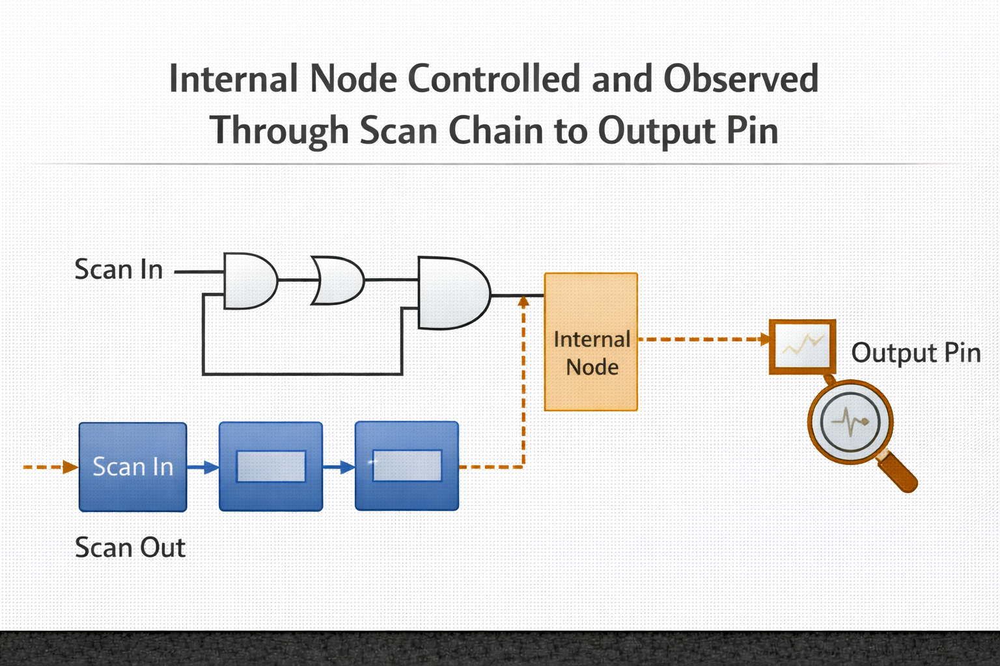
7️⃣ Fault Simulation & Fault Coverage
Fault Simulation
- Insert faults intentionally
- Run test patterns
- Check if fault is detected
Fault Coverage Formula
Fault Coverage=Detected FaultsTotal Faults×100Fault\ Coverage = \frac{Detected\ Faults}{Total\ Faults} \times 100Fault Coverage=Total FaultsDetected Faults×100
Industry Expectation
- 95% fault coverage
- Some designs target 99%+
8️⃣ Types of Defects in VLSI
Process Defects
Material Defects
- Crystal imperfections
- Impurities
Aging Defects
- Electromigration
- Oxide breakdown
Package Defects
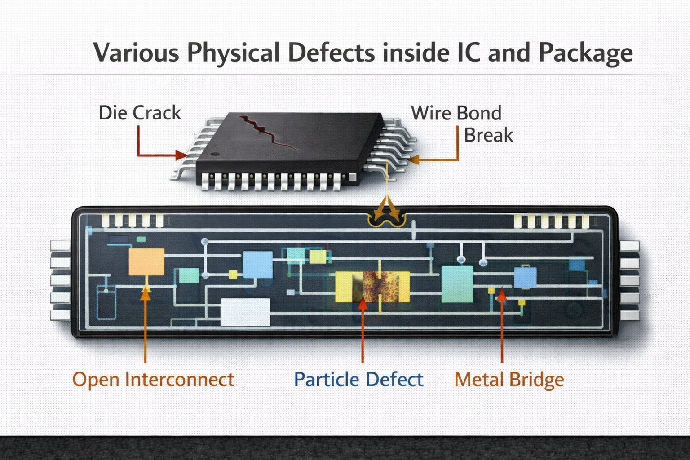
9️⃣ Major Types of Faults
Structural Faults
- Due to manufacturing
- Shorts, opens
Transition Faults
- Signal does not switch fast enough
- Related to:
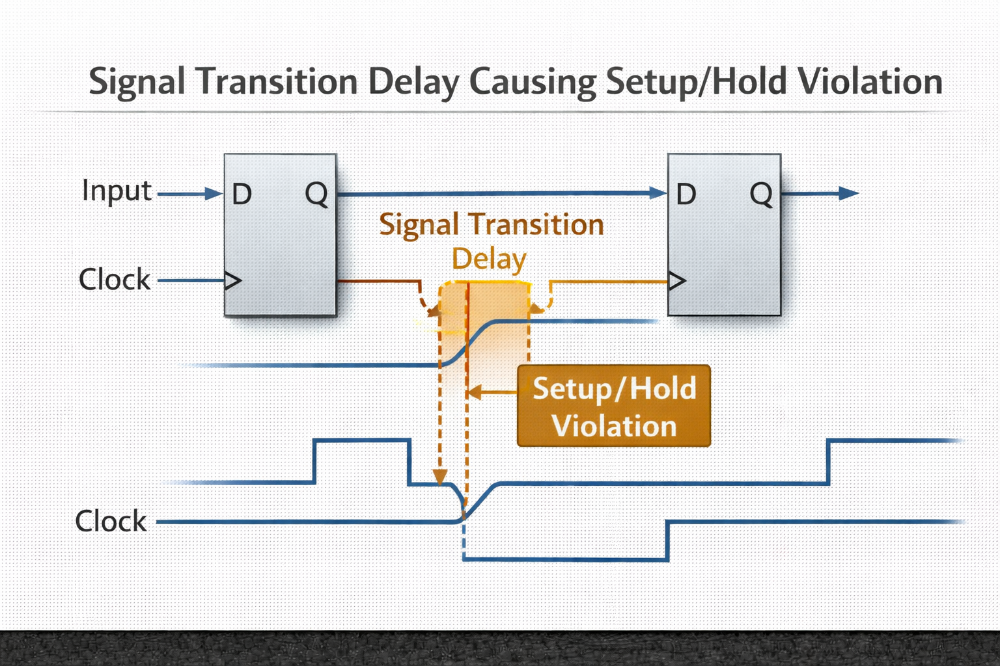
🔟 Scan Design (MOST IMPORTANT DFT TOPIC)
Why Scan Design?
- Flip-flops hide internal states
- Scan converts flip-flops into shift register
Scan Chain Components
Signal | Purpose |
Scan In (SI) | Shift data in |
Scan Out (SO) | Shift data out |
Scan Enable (SE) | Select test/functional |
Clock | Shift & capture |
Functional Mode
Test Mode
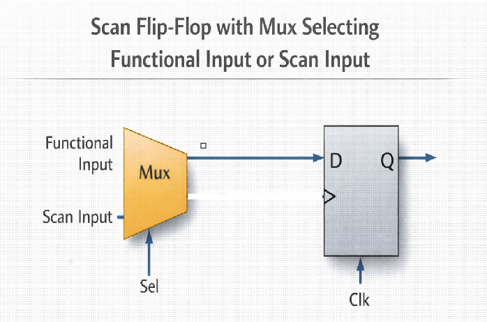
1️⃣1️⃣ Scan Stitching
What is Scan Stitching?
- Connecting flip-flops serially
- Forms scan chains
Why Scan Stitching Needed?
- Access internal flops
- Improve controllability & observability
- Enable ATPG
Problems Without Reordering
- Long wirelength
- Congestion
- Routing issues
Scan Chain Reordering
- Reorder flops based on placement
- Reduces:
- Wirelength
- Congestion
- Hold issues
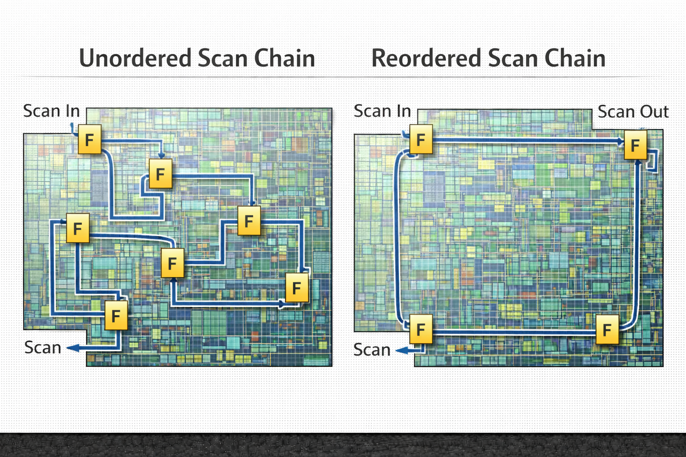
1️⃣2️⃣ Scan Chain Parameters
Scan Length
- Number of flops in one chain
- Trade-off:
- Long chain → less IO, more time
- Short chain → more IO, less time
Scan Polarity
- Active high / Active low scan enable
- Must match library cells
Scan DEF File
- Contains scan chain info
- Required during physical design
1️⃣3️⃣ Where DFT Fits in ASIC Flow
RTL
↓
Synthesis
↓
DFT Insertion
↓
ATPG
↓
Placement
↓
Scan Reordering
↓
Routing
↓
Manufacturing
↓
Testing
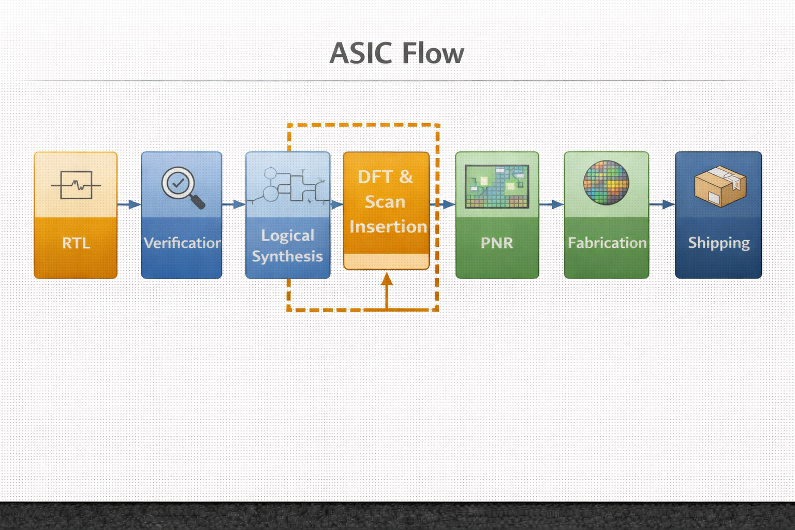
FINAL SUMMARY
- DFT ensures testable silicon
- Scan design is heart of DFT
- Fault modeling enables detection
- Controllability + Observability are key
- Scan stitching & reordering are critical for PD
1️⃣ ATPG – Automatic Test Pattern Generation
What is ATPG?
ATPG is a software tool that automatically generates test vectors to detect faults in a design.
Why ATPG is needed?
- Millions of faults exist in large chips
- Manual test writing is impossible
- ATPG:
- Generates patterns
- Maximizes fault coverage
- Minimizes test time
ATPG Uses:
- Scan chains
- Fault models (stuck-at, transition)
- DFT logic
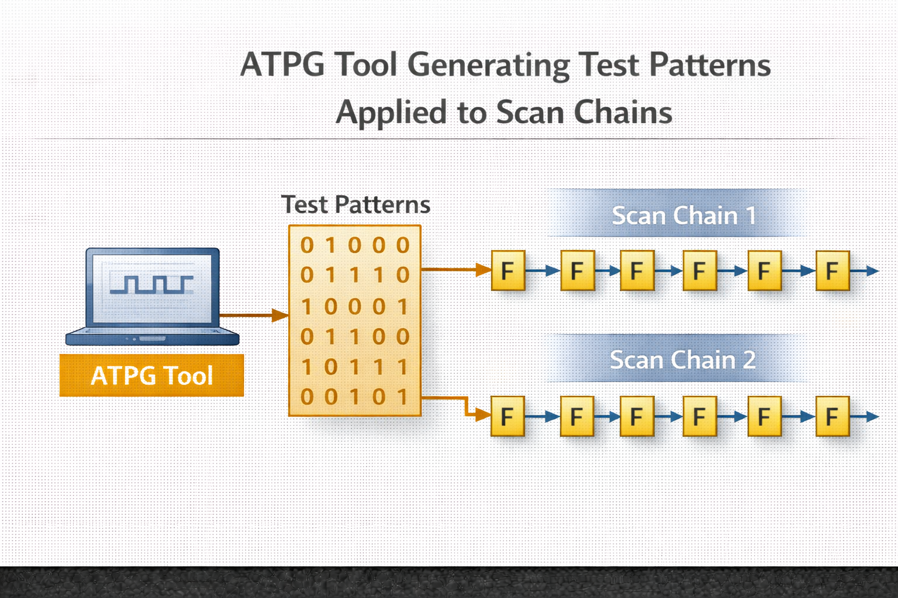
2️⃣ Types of Scan Design
1. Full Scan
- All flip-flops are scan-enabled
- Highest fault coverage
- Most common in industry
2. Partial Scan
- Only some flip-flops are scanned
- Used when:
- Area is critical
- Performance is critical
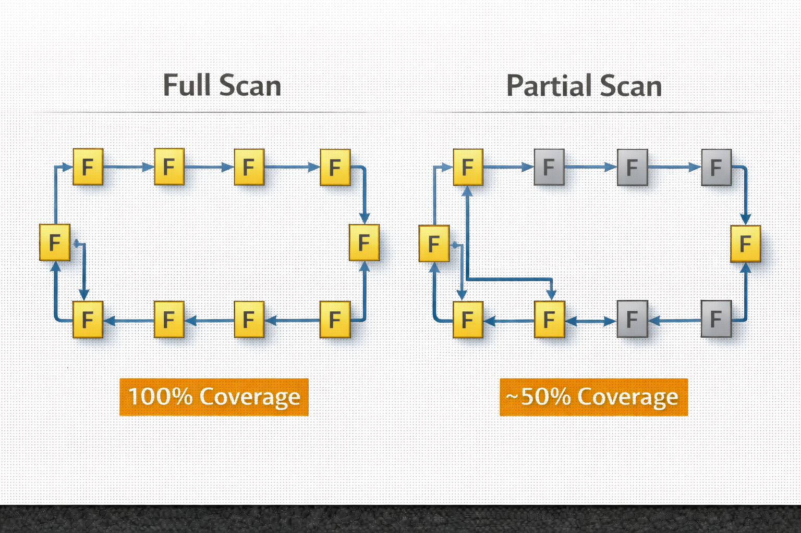
3️⃣ Shift Cycle vs Capture Cycle (VERY IMPORTANT)
Shift Cycle
- Scan Enable = 1
- Flip-flops act as shift registers
- Data shifted in/out
Capture Cycle
- Scan Enable = 0
- Functional clock applied
- Circuit response captured
Test Operation Flow
Shift → Shift → Shift → Capture → Shift out
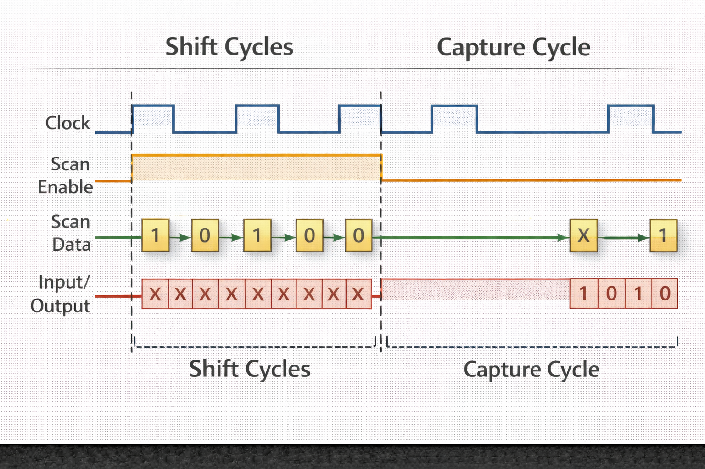
4️⃣ Scan Clock vs Functional Clock
Functional Clock
- Used during normal operation
- High frequency
Scan Clock
- Used during testing
- Low frequency (to reduce power)
Why Separate Scan Clock?
- Avoid IR drop
- Avoid overheating
- Safe shifting
5️⃣ Reset in Scan Design
Why Reset is Important?
- Initialize flip-flops
- Avoid unknown (X) states
Types of Reset
- Asynchronous reset
- Synchronous reset
Reset must be scan-friendly
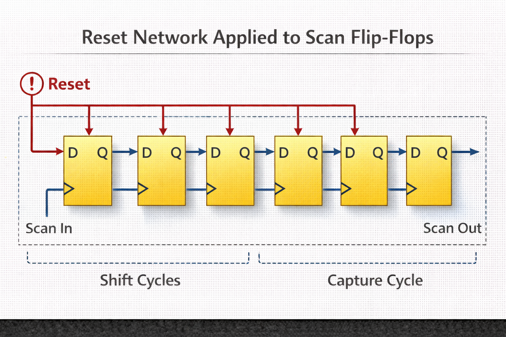
6️⃣ Multiple Scan Chains
Why Multiple Scan Chains?
- Single chain = very long shift time
- Multiple chains:
- Reduce test time
- Parallel shifting
Example
- 100,000 flops
- 10 scan chains → 10,000 flops per chain
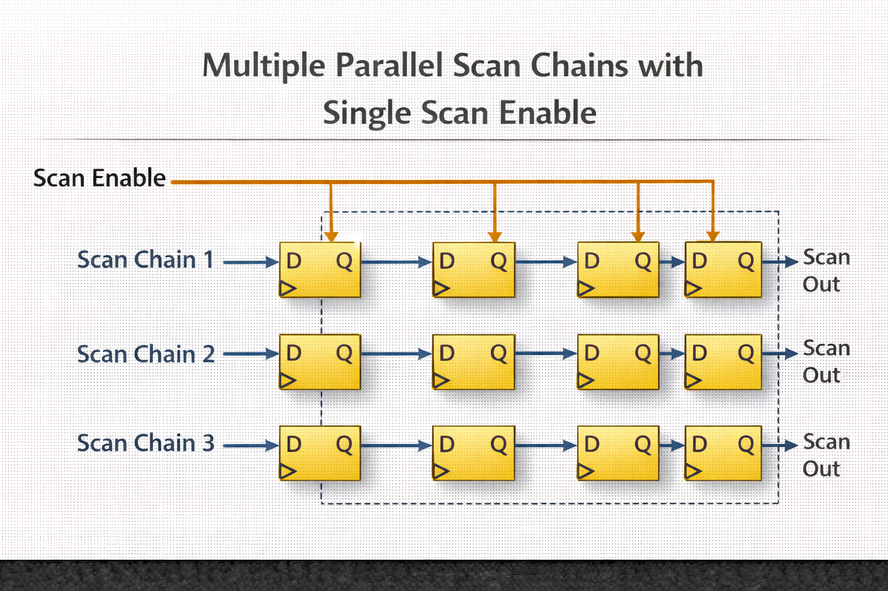
7️⃣ Scan Compression (High-Level)
Problem Without Compression
- Too many test vectors
- Long tester time
- High memory usage
Scan Compression
- Compress input patterns
- Decompress on-chip
- Compress output response
Huge test time reduction
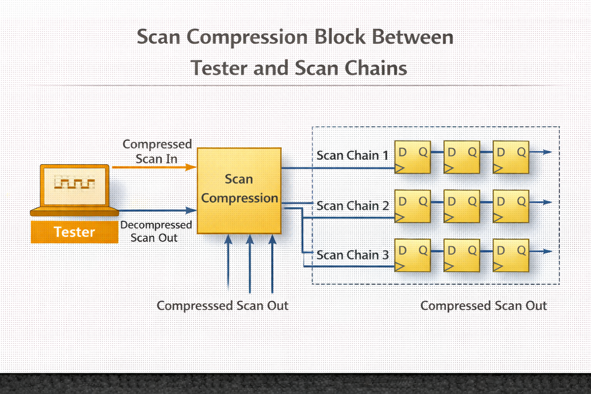
8️⃣ DFT for Memory – MBIST (Intro Level)
What is MBIST?
Memory Built-In Self Test
Why MBIST?
- Memories occupy large chip area
- Scan cannot efficiently test memories
MBIST Tests:
- Stuck-at faults
- Address faults
- Coupling faults
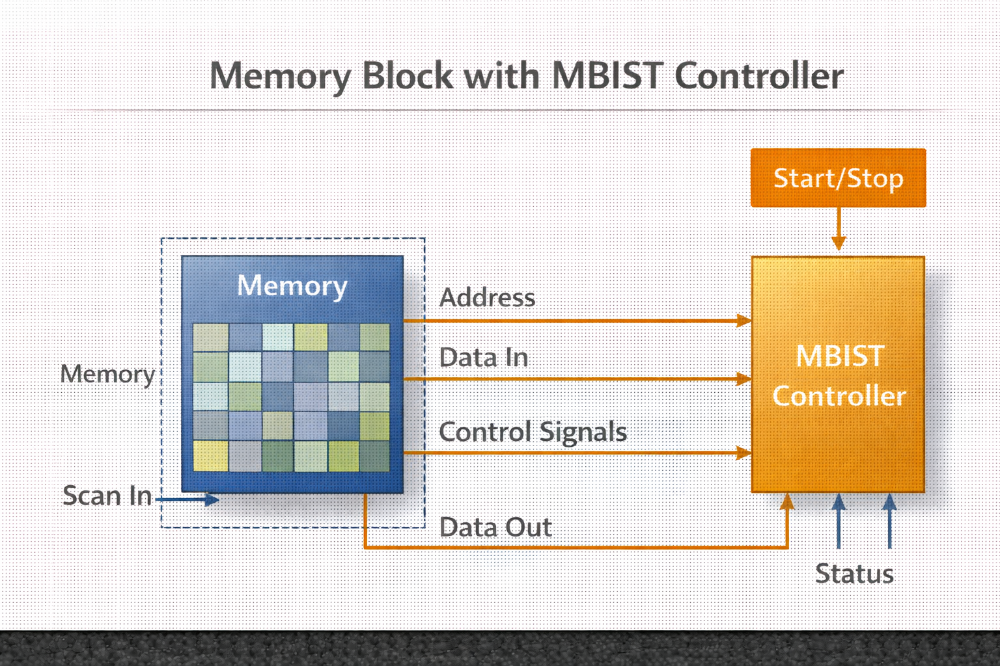
9️⃣ Boundary Scan (JTAG) – High Level
What is Boundary Scan?
- Board-level testing
- Debugging
IEEE Standard
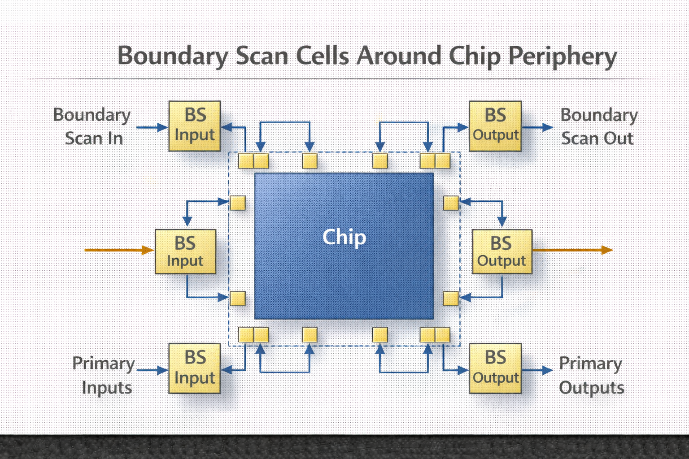
🔟 DFT Design Rules (DFT Rules)
Common DFT Rules
- No gated clocks (or scan-safe gating)
- Avoid combinational loops
- Reset must reach all flops
- Avoid latches (unless intentional)
- No X-propagation paths
Why Do Rules Matter?
- ATPG depends on clean logic
- Violations reduce fault coverage
1️⃣1️⃣ DFT Signals Summary
Signal | Purpose |
Scan In | Shift test data in |
Scan Out | Shift test data out |
Scan Enable | Select test/functional |
Scan Clock | Shift & capture |
Reset | Initialize flops |
Test Mode | Enable DFT logic |
1️⃣2️⃣ Common Student Mistakes (VERY USEFUL)
DFT fixes silicon → WRONG
Scan is only for testing → PARTIAL
Fault = defect → WRONG
DFT detects, not fixes
Scan improves observability
Fault is a model, defect is physical